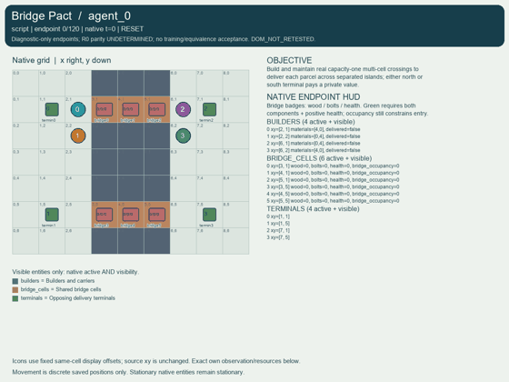
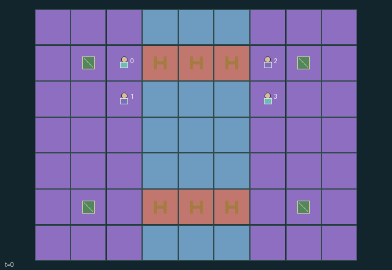

GI181 · Bridge Pact

Original recording scope: Role view · Mode: Fixed-script demonstration
Additional generated state replay (different trajectory / full-state debug)

Build and maintain real capacity-one multi-cell crossings to deliver each parcel across separated islands; either north or south terminal pays a private value.
Identity and original contract
4 independently actionable roles; 11 discrete commands per role; 137 native observation columns per role; original horizon 120 steps. Declared per-step reward range: -0.1 to 5.8. Observation regime: partially_observable.
Source SHA-256: 41fd76cd8f3a07938911f7529ee4b6f4591ba9f5f43b175c780f754426fdf19e
The objective, rewards, population, map and horizon remain original. A preview is not a success claim.
Objective and gameplay
Build and maintain real capacity-one multi-cell crossings to deliver each parcel across separated islands; either north or south terminal pays a private value.
Different builders initially own complementary scarce materials. A single contribution can unlock a peer step later; sharing, repair, route diversion, occupation and wear change later connectivity for everyone.
- Four builders start with complementary finite wood and bolts on opposite islands. Two distinct three-cell crossing routes exist at y=1 and y=5.
- A cell requires one wood and one bolts, committed from the cell or a cardinal neighbor. Same-material contention awards the lowest agent id; complementary contributions combine simultaneously.
- Newly complete cells receive integrity twelve. Old complete cells with positive integrity admit one builder per cell; old occupied destinations block swaps.
- Every entry causes one wear and every fourth transition causes one decay. Zero integrity blocks new entry but never moves or removes an existing occupant.
- Repair consumes one wood and one bolts, restores six integrity up to twelve, and may restore a worn-out occupied cell. Adjacent peers may transfer one material.
- Private destination values permit different route priorities. AUTHOR SOURCE ONLY: no connectivity trace, successful crossing, animation, causality test or learning result has been executed.
Ending: All four parcels delivered, otherwise H=120 truncation. Stranded builders and incomplete routes remain valid outcomes.
What this game explores
Information, sensing & communication: Who knows a fact, when it was measured, and whether it was communicated are separate state variables. Test memory or communication using only the same role-visible evidence.
Commitment, exchange & governance: Promises consume time, liquidity, access or material. Separate an announced agreement from a binding commitment and from its eventual delivery; log cancellation and expiry too.
Complementary production & service: A useful outcome requires ordered stages, scarce equipment or another role's capability. Measure real completed products and resource circulation rather than counting intermediate actions as success.
Joint transport & shared access: Positions, load geometry, occupancy and persistent access constrain whose action can succeed next. Distinguish physical handoff, shared controls and simultaneous force from a cosmetic cooperation label.
These are questions supported by rule structure, not observed learning effects.
Play it: operating walkthrough
crucibles play --game gi181Keep Python running and open its printed address. Select this game, set a seed and press Create session. The game itself is always English.
Assign a role range to Host with Assign / take over, or Assign all roles. Invite a second participant with Create player invitation, then assign a disjoint subset. Every original role is available.
For every owned role choose a legal command and press Queue. Arrow keys / WASD queue a declared directional action for the current role camera when available. Space or Advance one joint step advances everyone together. Non-directional games use the selectors.
Unqueued roles use the labelled untrained uniform-legal policy. Take over or release roles before the next step without resetting. Full-state debug is privileged and permanently logged; role cameras preserve permissions. Close the session to retain logs. Server restart does not restore sessions.
Complete command reference
IDs and English labels exactly match the manifest. Availability depends on role, resources, location and phase. An available action can still have no productive effect.
0·Wait
1·Move west
2·Move east
3·Move north
4·Move south
5·Commit wood to first reachable missing-wood cell
6·Commit bolts to first reachable missing-bolts cell
7·Give one wood to poorest adjacent peer
8·Give one bolts to poorest adjacent peer
9·Consume wood and bolts to repair weakest reachable cell
10·Deliver at either opposing terminal
Roles and capability identifiers
These original role names describe capabilities, not interchangeable skins. Check each owned role's legal selector before planning handoffs.
agent_0·west builder initially carrying wood
agent_1·west builder initially carrying bolts
agent_2·east builder initially carrying bolts
agent_3·east builder initially carrying wood
Information and observation permissions
All geometry, material stock, construction components, integrity, occupancy, repair consumption and delivery flags are public. Each role alone sees its two private terminal values. The scene does not bind private value attributes; private_visible is the identity mask.
The GIF is full-state debug and may reveal hidden entities or private state. Train on obs[agent], not the picture, state tree or another role's private row. Field slices and visibility are in the original manifest.
Reinforcement-learning integration
import jax
from crucibles_jaxmarl import make
env = make("gi181")
key = jax.random.PRNGKey(0)
key, rk, ak, sk = jax.random.split(key, 4)
obs, state = jax.jit(env.reset)(rk)
actions = env.sample_actions(ak, state)
obs, state, rewards, dones, info = jax.jit(env.step_env)(sk, state, actions)
done = dones["__all__"]Observations are float32 vectors of width 137; actions are scalar int32; masks have 11 entries. Supply all 4 roles each transition. Masked sampling is an engineering reference, not a trained learner.
step_env retains terminal data without reset. step performs outer autoreset and keeps terminal data in info["raw_state"] and info["raw_observation"]. Use dones["__all__"] for episode boundaries; separate completion, failure and time limit in analysis.
JIT or vmap equal identities and shapes. Split independent reset, policy and transition keys. Group different shapes explicitly; do not shrink the population or horizon. Host rendering stays outside training.
Training questions and fair evaluation
Define valid completion from the objective before fitting. Preserve original rewards and also report real deliveries/services, losses, resource state, unresolved episodes and per-role returns. Animation is not a reward signal.
Who knows a fact, when it was measured, and whether it was communicated are separate state variables. Test memory or communication using only the same role-visible evidence.
Promises consume time, liquidity, access or material. Separate an announced agreement from a binding commitment and from its eventual delivery; log cancellation and expiry too.
A useful outcome requires ordered stages, scarce equipment or another role's capability. Measure real completed products and resource circulation rather than counting intermediate actions as success.
Positions, load geometry, occupancy and persistent access constrain whose action can succeed next. Distinguish physical handoff, shared controls and simultaneous force from a cosmetic cooperation label.
Compare memory, communication or centralized critics under matched actor information. Declare critic access; keep actor inputs role-filtered. Match partner/opponent distributions, masks, compute and checkpoint selection. Final tests never enter fitting or selection.
Independent training runs or source-pairing blocks are inferential units; episodes from one policy are not independent training replications. Save hashes, keys, versions, device, time and cost. Negative, zero, failed and indeterminate outcomes are valid. No trained checkpoint or target score is supplied.
Classification and evidence
Overlapping editorial labels are reading aids, not proof of novelty, difficulty, strategic equivalence or learning effects.
- Information, sensing & communication
- Evidence
manifest.task.objective: Build and maintain real capacity-one multi-cell crossings to deliver each parcel across separated islands; either north or south terminal pays a private value.
- Evidence
manifest.task.observation_access: All geometry, material stock, construction components, integrity, occupancy, repair consumption and delivery flags are public. Each role alone sees its two private terminal values. The scene does not bind private value attributes; private_visible is the identity mask.
- Commitment, exchange & governance
- Evidence
manifest.actions.5: Commit wood to first reachable missing-wood cell
- Evidence
manifest.actions.6: Commit bolts to first reachable missing-bolts cell
- Evidence
scene.rules.1: A cell requires one wood and one bolts, committed from the cell or a cardinal neighbor. Same-material contention awards the lowest agent id; complementary contributions combine simultaneously.
- Complementary production & service
- Evidence
manifest.task.interaction: Different builders initially own complementary scarce materials. A single contribution can unlock a peer step later; sharing, repair, route diversion, occupation and wear change later connectivity for everyone.
- Evidence
manifest.task.observation_access: All geometry, material stock, construction components, integrity, occupancy, repair consumption and delivery flags are public. Each role alone sees its two private terminal values. The scene does not bind private value attributes; private_visible is the identity mask.
- Evidence
manifest.actions.9: Consume wood and bolts to repair weakest reachable cell
- Joint transport & shared access
- Evidence
manifest.task.objective: Build and maintain real capacity-one multi-cell crossings to deliver each parcel across separated islands; either north or south terminal pays a private value.
- Evidence
manifest.task.interaction: Different builders initially own complementary scarce materials. A single contribution can unlock a peer step later; sharing, repair, route diversion, occupation and wear change later connectivity for everyone.
- Evidence
manifest.task.observation_access: All geometry, material stock, construction components, integrity, occupancy, repair consumption and delivery flags are public. Each role alone sees its two private terminal values. The scene does not bind private value attributes; private_visible is the identity mask.
Source, receipts and preview limits
The additional generated state GIF replays saved untrained legal actions through the original kernel. At most 25 actual endpoints include initial and terminal state; no invented interpolation. It is full-state debug, not the role observation. Where an original scene preview exists, it is displayed first with its own recorded information scope. The two recordings may use different trajectories and views.
Original source, observation slices, manifest and mechanism
Native receipt · Presentation receipt
Engineering passes do not establish learning. Nonzero floating differences remain recorded and undetermined; no new tolerance was introduced. Human scores remain unverified.